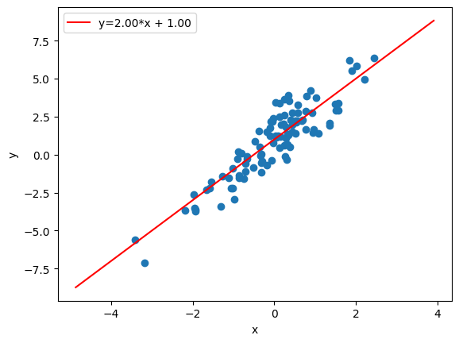
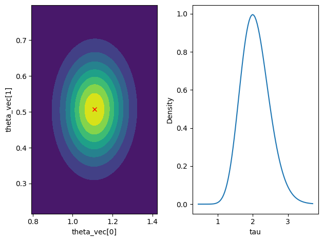

bayesml.sparselinearregression package#
Module contents#
This module provides the sparse linear regression model with the Laplace prior distribution (represented as a Gaussian scale mixture).

Stochastic Data Generative Model#
The stochastic data generative model is as follows:
\(d \in \mathbb{N}\): a dimension of explanatory variables
\(\boldsymbol{x} \in \mathbb{R}^d\): an explanatory variable. If you consider an intercept term, it should be included as one of the elements of \(\boldsymbol{x}\).
\(y \in \mathbb{R}\): an objective variable
\(\boldsymbol{\theta} \in \mathbb{R}^d\): a regression coefficient vector
\(\tau \in \mathbb{R}_{>0}\): a precision parameter
\(\boldsymbol{v} = (v_1, \ldots, v_d)^\top \in \mathbb{R}_{>0}^d\): latent scale variables
Prior Distribution#
The prior distribution is as follows:
\(\boldsymbol{\lambda}_0 = (\lambda_{0,1}, \ldots, \lambda_{0,d})^\top \in \mathbb{R}_{>0}^d\): a hyperparameter vector (Laplace regularization strength for each dimension)
\(\alpha_0 \in \mathbb{R}_{>0}\): a hyperparameter
\(\beta_0 \in \mathbb{R}_{>0}\): a hyperparameter
\(\Gamma(\cdot)\): the gamma function
Marginalizing out each \(v_j\) yields the Laplace prior on \(\theta_j\):
Posterior Distribution#
The approximate posterior distribution in the \(t\)-th iteration of a variational Bayesian method is as follows:
\(\boldsymbol{X} = (\boldsymbol{x}_1, \ldots, \boldsymbol{x}_n)^\top \in \mathbb{R}^{n \times d}\): given explanatory variables
\(\boldsymbol{y} = (y_1, \ldots, y_n)^\top \in \mathbb{R}^n\): given objective variables
\(\boldsymbol{\mu}_n^{(t)} \in \mathbb{R}^d\): a hyperparameter
\(\boldsymbol{\Lambda}_n^{(t)} \in \mathbb{R}^{d \times d}\): a hyperparameter (a positive definite matrix)
\(\alpha_n^{(t)} \in \mathbb{R}_{>0}\): a hyperparameter
\(\beta_n^{(t)} \in \mathbb{R}_{>0}\): a hyperparameter
\(a_{n,j}^{(t)} \in \mathbb{R}_{>0}\): a hyperparameter for \(q(v_j)\)
\(b_{n,j}^{(t)} \in \mathbb{R}_{>0}\): a hyperparameter for \(q(v_j)\)
\(K_{\nu}(\cdot)\): the modified Bessel function of the second kind
where \(\mathrm{GIG}(x | p, a, b) = \frac{(a/b)^{p/2}}{2K_p(\sqrt{ab})} x^{p-1} \exp\left\{-\frac{1}{2}(ax + bx^{-1})\right\}\).
The updating rule of the hyperparameters is as follows.
Accordingly,
Predictive Distribution#
The approximate predictive distribution is as follows:
\(\boldsymbol{x}_{n+1} \in \mathbb{R}^d\): a new explanatory variable
\(y_{n+1} \in \mathbb{R}\): a new objective variable
\(m_{\mathrm{p}} \in \mathbb{R}\): a parameter of the predictive distribution
\(\lambda_{\mathrm{p}} \in \mathbb{R}_{>0}\): a parameter of the predictive distribution
\(\nu_{\mathrm{p}} \in \mathbb{R}_{>0}\): a parameter of the predictive distribution
where the parameters are obtained from the hyperparameters of the posterior distribution as follows:
Star Us on GitHub#
Open the repo and hit ☆ Star in the top right!

Classes#
- class bayesml.sparselinearregression.GenModel(c_degree, theta_vec=None, tau=1.0, h_lambdas=None, h_alpha=1.0, h_beta=1.0, seed=None)#
ベースクラス:
GenerativeThe stochastic data generative model and the prior distribution.
- Parameters:
- c_degreeint
A positive integer. The dimension of the explanatory variable. If you consider an intercept term, it should be included as one of the elements of the explanatory variable.
- theta_vecnumpy ndarray, optional
A vector of real numbers, by default
[0.0, ..., 0.0].- taufloat, optional
A positive real number, by default
1.0.- h_lambdasfloat or numpy.ndarray, optional
Positive real numbers, (Laplace regularization strength), by default
[1.0, 1.0, ... , 1.0]. If a single real number is input, it will be broadcasted.- h_alphafloat, optional
A positive real number, by default
1.0.- h_betafloat, optional
A positive real number, by default
1.0.- seed{None, int}, optional
A seed to initialize
numpy.random.default_rng(), by defaultNone.
Methods
Generate parameters from the prior distribution.
gen_sample([sample_size, x, constant])Generate a sample from the stochastic data generative model.
Get constants of GenModel.
Get the hyperparameters of the prior distribution.
Get the parameters of the stochastic data generative model.
load_h_params(filename)Load the hyperparameters to h_params.
load_params(filename)Load the parameters saved by
save_params.save_h_params(filename)Save the hyperparameters using python
picklemodule.save_params(filename)Save the parameters using python
picklemodule.save_sample(filename[, sample_size, x, constant])Save the generated sample as NumPy
.npzformat.set_h_params([h_lambdas, h_alpha, h_beta])Set the hyperparameters of the prior distribution.
set_params([theta_vec, tau])Set the parameters of the stochastic data generative model.
visualize_model([sample_size, constant])Visualize the stochastic data generative model and generated samples.
- get_constants()#
Get constants of GenModel.
- Returns:
- constantsdict of {str: int}
"c_degree": the value ofself.c_degree
- set_h_params(h_lambdas=None, h_alpha=None, h_beta=None)#
Set the hyperparameters of the prior distribution.
- Parameters:
- h_lambdasfloat or numpy.ndarray, optional
Positive real numbers, (Laplace regularization strength), by default
None. If a single real number is input, it will be broadcasted.- h_alphafloat, optional
A positive real number, by default
None.- h_betafloat, optional
A positive real number, by default
None.
- get_h_params()#
Get the hyperparameters of the prior distribution.
- Returns:
- h_paramsdict of {str: float}
"h_lambdas": The value ofself.h_lambdas"h_alpha": The value ofself.h_alpha"h_beta": The value ofself.h_beta
- gen_params()#
Generate parameters from the prior distribution.
The generated values are set at
self.theta_vec,self.tau, andself.v_vec.
- set_params(theta_vec=None, tau=None)#
Set the parameters of the stochastic data generative model.
- Parameters:
- theta_vecnumpy ndarray, optional
A vector of real numbers, by default
None.- taufloat, optional
A positive real number, by default
None.
- get_params()#
Get the parameters of the stochastic data generative model.
- Returns:
- paramsdict of {str: float or numpy ndarray}
"theta_vec": The value ofself.theta_vec"tau": The value ofself.tau
- gen_sample(sample_size=None, x=None, constant=True)#
Generate a sample from the stochastic data generative model.
If
xis given, it will be used for explanatory variables as it is (independent of the other options:sample_sizeandconstant).If
xis not given, it will be generated from i.i.d. standard normal distributions. The size of the generated sample is defined bysample_size. IfconstantisTrue, the last element of the generated explanatory variables will be overwritten by1.0.- Parameters:
- sample_sizeint, optional
A positive integer, by default
None.- xnumpy ndarray, optional
A float array whose shape is
(sample_size, c_degree), by defaultNone.- constantbool, optional
A boolean value, by default
True.
- Returns:
- xnumpy ndarray
A float array whose shape is
(sample_size, c_degree).- ynumpy ndarray
A 1-dimensional float array whose size is
sample_size.
- save_sample(filename, sample_size=None, x=None, constant=True)#
Save the generated sample as NumPy
.npzformat.The generated sample is saved as a NpzFile with keywords
"x"and"y".- Parameters:
- filenamestr
The filename to which the sample is saved.
.npzwill be appended if it is not there.- sample_sizeint, optional
A positive integer, by default
None.- xnumpy ndarray, optional
A float array whose shape is
(sample_size, c_degree), by defaultNone.- constantbool, optional
A boolean value, by default
True.
- visualize_model(sample_size=100, constant=True)#
Visualize the stochastic data generative model and generated samples.
- Parameters:
- sample_sizeint, optional
A positive integer, by default
100.- constantbool, optional
A boolean value, by default
True.
Examples
>>> import numpy as np >>> from bayesml import sparselinearregression >>> model = sparselinearregression.GenModel( ... c_degree=2, ... theta_vec=np.array([2.0, 1.0]) ... ) >>> model.visualize_model()
- class bayesml.sparselinearregression.LearnModel(c_degree, h0_lambdas=None, h0_alpha=1.0, h0_beta=1.0, seed=None)#
ベースクラス:
Posterior,PredictiveMixinThe posterior distribution and the predictive distribution.
Inference is performed by variational Bayes. The variational posterior is
- Parameters:
- c_degreeint
A positive integer. The dimension of the explanatory variable.
- h0_lambdasfloat, optional
Positive real numbers, (Laplace regularization strength), by default
[1.0, 1.0, ... , 1.0]. If a single real number is input, it will be broadcasted.- h0_alphafloat, optional
A positive real number, by default
1.0.- h0_betafloat, optional
A positive real number, by default
1.0.- seed{None, int}, optional
A seed to initialize
numpy.random.default_rng()used for VB random restarts, by defaultNone.
- Attributes:
- hn_mu_vecnumpy ndarray
A vector of real numbers.
- hn_lambda_matnumpy ndarray
A positive definite matrix.
- hn_alphafloat
A positive real number.
- hn_betafloat
A positive real number.
- hn_asnumpy ndarray
A vector of positive real numbers (\(= \lambda_0^2\)).
- hn_bsnumpy ndarray
A vector of positive real numbers.
- p_msfloat
A real number.
- p_lambdasfloat
A positive real number.
- p_nusfloat
A positive real number.
- vlfloat
The variational lower bound.
Methods
Calculate the parameters of the predictive distribution.
estimate_params([loss, dict_out])Estimate the parameter of the stochastic data generative model under the given criterion.
fit(x, y[, max_itr, num_init, tolerance])Fit the model to the data.
Get constants of LearnModel.
Get the initial values of the hyperparameters of the prior distribution.
Get the hyperparameters of the posterior distribution.
Get the parameters of the predictive distribution.
load_h0_params(filename)Load the hyperparameters to h0_params.
load_hn_params(filename)Load the hyperparameters to hn_params.
make_prediction([loss])Predict a new data point under the given criterion.
Overwrite the initial values of the hyperparameters of the prior distribution by the learned values.
pred_and_update(x, y[, max_itr, num_init, ...])Predict a new data point and update the posterior sequentially.
predict(x)Predict the data.
Reset the hyperparameters of the posterior distribution to initial values.
save_h0_params(filename)Save the hyperparameters using python
picklemodule.save_hn_params(filename)Save the hyperparameters using python
picklemodule.set_h0_params([h0_lambdas, h0_alpha, h0_beta])Set initial values of the hyperparameters of the prior distribution.
set_hn_params([hn_mu_vec, hn_lambda_mat, ...])Set updated values of the hyperparameters of the posterior distribution.
update_posterior(x, y[, max_itr, num_init, ...])Update the hyperparameters of the posterior distribution using training data.
Visualize the posterior distribution for the parameter.
- get_constants()#
Get constants of LearnModel.
- Returns:
- constantsdict of {str: int}
"c_degree": the value ofself.c_degree
- set_h0_params(h0_lambdas=None, h0_alpha=None, h0_beta=None)#
Set initial values of the hyperparameters of the prior distribution.
Note that
reset_hn_params()is called inside this method.- Parameters:
- h0_lambdasfloat, optional
Positive real numbers, (Laplace regularization strength), by default
None. If a single real number is input, it will be broadcasted.- h0_alphafloat, optional
A positive real number, by default
None.- h0_betafloat, optional
A positive real number, by default
None.
- get_h0_params()#
Get the initial values of the hyperparameters of the prior distribution.
- Returns:
- h0_paramsdict of {str: float}
"h0_lambdas": The value ofself.h0_lambdas"h0_alpha": The value ofself.h0_alpha"h0_beta": The value ofself.h0_beta
- reset_hn_params()#
Reset the hyperparameters of the posterior distribution to initial values.
Usualy, hn_params are reset to the output of self.get_h0_params(), but the prior distribution and the posterior distribution have different form in this model, therefore, they are set to the solution of variational Bayesian updating formula with no data.
Note that
calc_pred_distis called with a zero vector inside this method.
- overwrite_h0_params()#
Overwrite the initial values of the hyperparameters of the prior distribution by the learned values.
Usualy, h0_params are overwritten to the output of self.get_hn_params(), but the prior distribution and the posterior distribution have different form in this model, therefore, h0_lambdas are set to minimize KL(GIG(1/2,`hn_as`,`hn_bs`)||Exp(0.5*`h0_lambdas`**2)).
Note that
reset_hn_params()is called inside this method.
- set_hn_params(hn_mu_vec=None, hn_lambda_mat=None, hn_alpha=None, hn_beta=None, hn_as=None, hn_bs=None)#
Set updated values of the hyperparameters of the posterior distribution.
Note that
calc_pred_distis called with a zero vector inside this method.- Parameters:
- hn_mu_vecnumpy ndarray, optional
A vector of real numbers, by default
None.- hn_lambda_matnumpy ndarray, optional
A positive definite matrix, by default
None.- hn_alphafloat, optional
A positive real number, by default
None.- hn_betafloat, optional
A positive real number, by default
None.- hn_asnumpy ndarray, optional
A vector of positive real numbers, by default
None.- hn_bsnumpy ndarray, optional
A vector of positive real numbers, by default
None.
- get_hn_params()#
Get the hyperparameters of the posterior distribution.
- Returns:
- hn_paramsdict of {str: float or numpy ndarray}
"hn_mu_vec": The value ofself.hn_mu_vec"hn_lambda_mat": The value ofself.hn_lambda_mat"hn_alpha": The value ofself.hn_alpha"hn_beta": The value ofself.hn_beta"hn_as": The value ofself.hn_as"hn_bs": The value ofself.hn_bs
- update_posterior(x, y, max_itr=100, num_init=10, tolerance=1.0e-8, init_type='Ridge', initial_bs=None, warm_start=False)#
Update the hyperparameters of the posterior distribution using training data.
- Parameters:
- xnumpy ndarray
A float array whose shape is
(sample_size, c_degree). If you want to use a constant term, it should be included inx.- ynumpy ndarray
A 1-dimensional float array whose size is
sample_size.- max_itrint, optional
Maximum number of VB iterations per initialization, by default
100.- num_initint, optional
Number of random restarts, by default
10. Ifinit_typeis'Ridge','OLS', or'manual'orwarm_startisTruethis argument is ignored.- tolerancefloat, optional
Convergence threshold on relative change of VL, by default
1.0e-8.- init_typestr, optional
Initialization method for the variational Bayesian method, by default
'Ridge'. This function supports the following values: *'Ridge': Initialize hn_mu_vec and hn_lambda_mat to the Ridge solution with h0_lambdas as the regularization strength. *'OLS': Initialize hn_mu_vec and hn_lambda_mat to the OLS solution. *'exponential_rv': Randomly initialize hn_bs from an exponential distribution with scale 1.0. *'manual': Manually set initial values of hn_bs. In this case, the argumentinitial_bsmust be given.- initial_bsnumpy ndarray, optional
A vector of positive real numbers, by default
None. Ifinit_typeis'manual', this argument must be given.- warm_startbool, optional
If True, use the sufficient statistics of past samples and the current posterior as the starting point for the next update.
- estimate_params(loss='squared', dict_out=False)#
Estimate the parameter of the stochastic data generative model under the given criterion.
Note that the criterion is applied to estimating
theta_vecandtauindependently.- Parameters:
- lossstr, optional
Loss function underlying the Bayes risk function, by default
"squared". This function supports"squared","0-1","abs", and"KL".- dict_outbool, optional
If
True, output will be a dict, by defaultFalse.
- Returns:
- estimatestuple of {numpy ndarray, float, None, or rv_frozen}
theta_vec: the estimate for thetatau_hat: the estimate for tau
The estimated values under the given loss function. If it does not exist,
Nonewill be returned. If the loss is"KL", the approximate posterior distribution itself will be returned asrv_frozenobjects ofscipy.stats.
- visualize_posterior()#
Visualize the posterior distribution for the parameter.
Examples
>>> import numpy as np >>> from bayesml import sparselinearregression >>> gen_model = sparselinearregression.GenModel( ... c_degree=2, theta_vec=np.array([1.0, 0.5]), tau=2.0, seed=0 ... ) >>> x, y = gen_model.gen_sample(sample_size=50) >>> learn_model = sparselinearregression.LearnModel(c_degree=2) >>> learn_model.update_posterior(x, y) >>> learn_model.visualize_posterior()

- get_p_params()#
Get the parameters of the predictive distribution.
- Returns:
- p_paramsdict of {str: float}
"p_ms": The value ofself.p_ms"p_lambdas": The value ofself.p_lambdas"p_nus": The value ofself.p_nus
- calc_pred_dist(x)#
Calculate the parameters of the predictive distribution.
- Parameters:
- xnumpy ndarray
float array. The size along the last dimension must conincides with the c_degree. If you want to use a constant term, it should be included in x.
- make_prediction(loss='squared')#
Predict a new data point under the given criterion.
- Parameters:
- lossstr, optional
Loss function underlying the Bayes risk function, by default
"squared". This function supports"squared","0-1","abs", and"KL".
- Returns:
- Predicted_values{numpy ndarray, rv_frozen}
The predicted values under the given loss function. The size of the predicted values is the same as the sample size of x when you called calc_pred_dist(x). If the loss function is "KL", the predictive distribution itself will be returned as rv_frozen object of scipy.stats. The rv_frozen object supports broadcasting.
- pred_and_update(x, y, max_itr=100, num_init=10, tolerance=1.0e-8, loss='squared')#
Predict a new data point and update the posterior sequentially.
Note that
update_posterioris called withwarm_start=Trueinside this method.- Parameters:
- xnumpy ndarray
A float array whose shape is
(sample_size, c_degree). If you want to use a constant term, it should be included inx.- ynumpy ndarray
A 1-dimensional float array whose size is
sample_size.- max_itrint, optional
Maximum number of VB iterations per initialization, by default
100.- num_initint, optional
Number of random restarts, by default
10.- tolerancefloat, optional
Convergence threshold on relative change of VL, by default
1.0e-8.- lossstr, optional
Loss function underlying the Bayes risk function, by default
"squared".
- Returns:
- Predicted_values{numpy ndarray, rv_frozen}
The predicted values under the given loss function. The size of the predicted values is the same as the sample size of x when you called calc_pred_dist(x). If the loss function is "KL", the predictive distribution itself will be returned as rv_frozen object of scipy.stats.
- fit(x, y, max_itr=1000, num_init=10, tolerance=1.0E-8)#
Fit the model to the data.
This function is a wrapper of the following functions:
>>> self.reset_hn_params() >>> self.update_posterior(x,y,max_itr,tolerance) >>> return self
- Parameters:
- xnumpy ndarray
float array. The size along the last dimension must conincides with the c_degree. If you want to use a constant term, it should be included in x.
- ynumpy ndarray
float array.
- max_itrint, optional
maximum number of iterations, by default 1000
- num_initint, optional
number of initializations, by default 10
- tolerancefloat, optional
convergence criterion of variational lower bound, by default 1.0E-8
- Returns:
- selfLearnModel
The fitted model.
- predict(x)#
Predict the data.
This function is a wrapper of the following functions:
>>> self.calc_pred_dist(x) >>> return self.make_prediction(loss="squared")
- Parameters:
- xnumpy ndarray
float array. The size along the last dimension must conincides with the c_degree. If you want to use a constant term, it should be included in x.
- Returns:
- Predicted_valuesnumpy ndarray
The predicted values under the squared loss function. The size of the predicted values is the same as the sample size of x.